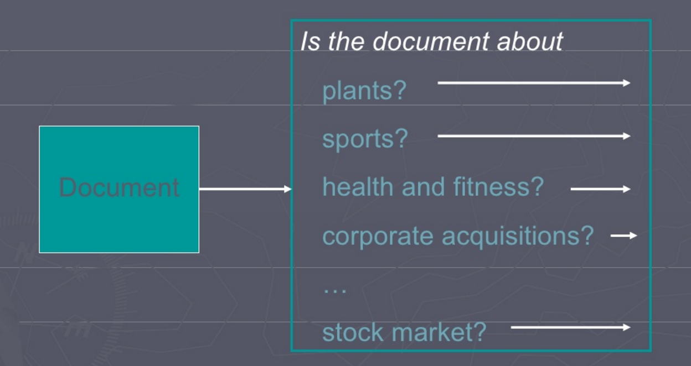
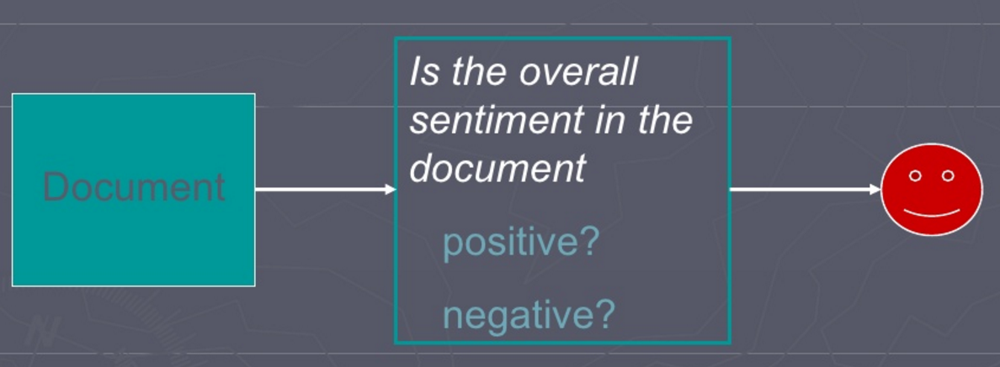

Cognitive Computing BootCamp
Slides @ vishnu667.github.io/slides/cognitive-bootcamp/
Perquisites
Create account in Bluemix
Install nodered
Local Installation
$ sudo npm install -g node-red
$ sudo npm install -g node-red-node-watson
$ sudo npm install -g node-red-node-alchemy-sentiment
$ sudo npm install -g node-red-contrib-twitter-stream
$ node-redBluemix Deployment - Instructions
I'm Vishnu.
I work as
Data Science Engineer @ HappiestMinds.
![]()
![]()
What do I Do?
- Distributed Systems
- Machine Learning
- Deep Neural Networks
What do I work with?
- Languages : Scala, C & C++
- Technologies : Spark, Hadoop, Akka, TensorFlow, Vowpal Wabbit & More
What is Cognitive Computing?
Cognitive computing is the simulation of human thought processes in a computerized model.
- Data Mining
- Pattern Recognition
- Natural Language Processing (NLP)
to mimic the way the human brain works.
Cognitive Computing Applications
- Chat Bots
- Image Recognition
- Feature Extraction
- Search Systems
- Image Search
- NLP
- Voice to Text
- Sentiment Analysis
Who would benefit & who would suffer from the shift ?
Developers, Data Scientists, Data Analysts, etc
Support staff (Voice & Text). Chat Bots are here to stay!!
What services are available to build cognitive applications?
Natural Language Processing
-
(NLP)
- Location : Afghanistan
- date : 05/30/1998
- Magnitude : 6.9
- Epicenter : Remote part of the Country
- Damage :
- Human Effect : Thousands Died
- Physical Effect : Villages Buried
Quake in Afghanistan
Thousands of people are feared dead following a powerful earthquake that hit Afghanistan
today.
The quake registered 6.9 on the Richter scale, centered in a remote part of the country.
Details now hard to come by, but reports say entire villages were buried by the quake.
Text Categorization
Sentiment Classification
Information Extraction
into a structured representation,
with certain key elements of information.
These extractions are utilized in a range of applications.
Traditional Use Cases from which NLP has evolved
- Language Classification
- Machine Translation
- Tokenizer
Tasks in NLP
- Tokenization / Segmentation
- Stemming
- Part of Speech (POS) Tagging
- Disambiguation
- Contextual Analysis
- Sentiment Analysis
Tokenization / Segmentation
"They lay back on the San Fransciso grass and looked at the stars and their"
"Vineet is playing the role of Duke of Athens in A Midsummer Night's Dream in a theatre in New Delhi"
Token : an instance of that type in running text.
Stemming
- car, cars -> car
- ran, run, running -> run
- stem, stemming, stemmed -> stem
POS Tagging
"Today is a beautiful day."
- Today : Noun
- is : Verb
- a : Article
- beautiful : Adjective
- day : Noun
Disambiguation
"He approached many banks for the load."
"My house is on the banks of Ganga"
"Free Lunch" vs "Free Speech"
Contextual Analysis
Some key questions are:
- What does the text reveal about itself as a text?
- What does the text tell us about its apparent intended audience(s)?
- What seems to have been the author’s intention?
- What is the occasion for this text?
Sentiment Analysis
Emotional Analysis deals with emotions such as Anger, Fear, Joy, etc.
Common Tools for NLP
- OpenNLP
- GATE
- NLTK (python)
- Stanford NLTK
Watson's Congnitive Api's
- Natural Language Classifier
- Visual Recognition
- AlchemyLanguage
- Conversation
- Tone Analyzer
- Personality Insights
- Trade off Analytics
Natural Language Classifier
Quick LinksVisual Recognition
Quick LinksAlchemyLanguage
Quick LinksConversation
Quick LinksTone Analyzer
Quick LinksPersonality Insights
Quick LinksTrade off Analytics
Quick LinksNode-red
URL http://10.60.9.37:1880/AnalyzeSentiment
{"action":"insights","payload":"How do you make one of the most detailed, lengthy, and popular novels of all time into a full blown feature film while faithfully sticking to every beloved detail contained within it? The answer is, you don't. Instead, you make a film that sticks as closely to it's source material as possible while staying within the necessary boundaries of filmmaking. Peter Jackson has created the impossible dream, that dream is Fellowship of the Ring, the first film in The Lord of the Rings trilogy. But this review isn't a rant about how wonderful the books are. Unlike some fat bastard reviewers, I'm aware that I am a FILM CRITIC not a member in the Ebert... er… Oprah Book of the Month club. Still, I love these books. It's impossible not to be influenced by them at least in some way, for better or for worst. Yet, in the end, the only important question is whether or not Lord of the Rings succeeds as a film. Directed by Peter Jackson, Fellowship of the Ring, is the first film in a series of three, collectively entitled, Lord of the Rings. Based on a series of novels of the same name by famed fantasy author J.R.R. Tolkien, The Lord of the Rings is the story of an all powerful ring and the struggle of a noble few to breaksit and its master's dark power. If you've read the books, you know just what a simplistic and dumbed down explanation that is. Lord of the Rings is much more than a bunch of furry footed creatures and wizards running about with swords and using silly medieval catch phrases. It's a journey of spirit and darkness unlike any other. Director Peter Jackson has re-created a world so full of history, detail, and affection, that it far surpasses the work of any other. The impossible dream of Tolkien fans has come true, and the beauty, majesty, and genius of Tolkien's world is at last fully realized. Despite being populated with wizards, elves, dwarfs, and trolls, Lord of the Rings has more in common with epic films like Ben Hur or The Ten Commandments than it does with the comparatively small-scale mild adventurism that is the likes of Harry Potter. Fellowship bites down hard and achieves a beautifully broad and dramatic scale, balancing the mind-boggling beauty of Tolkien's Middle Earth with the majesty and history of its characters. This is a film of contrast and familiarity. Contrast it its landscapes, from the comfortable, sweetly beautiful landscapes of Hobbiton, to the dark and disturbing dangers of deeply delved Moria, to the majestic, breathtaking tree homes of Lothlorien and the elves. Familiarity in it's characters, brought together by the fickle scales of fate, desperately balancing their lives against evil for the greater good. It's also a movie about struggle and determination, as the smallest and meekest of creatures enters a world far beyond their experience. There is more here than just good directing, more than just good story telling, more than just good filmmaking. To put it simply there is a LOVE for THIS material and a LOVE for what these people are doing. Most of this cast are virtual unknowns, yet to a man (or elf), they carry themselves, one and all, like veteran actors. There's a fire in their step, a twinkle in their eyes, and flash in those little glimpses at just the right moments. These people ARE these characters, and most of all they enjoy being them. Sean Bean, a man whom almost no one has heard of, delivers such a mind blowing bit of acting as the tortured soldier Boromir. You FEEL his need to help his people, he oozes conflict and angst, all the while blazing false bravado and charm. Boromir COULD have come off as a turd. After all, he stoops to depths one doesn't expect from a hero. In his final moments, Bean so successfully captures the spirit of the man, a man driven by love for his people, a man beaten down by battle and struggle, that we easily identify with him and love him, mistakes and all. Ian McKellan is the consummate thespian. Born to play Gandalf, his intensity DRIVES the film. Gandalf is the catalyst for everything. McKellan himself is magic. How can a man so old still be so spry? Like McKellan, Ian part deux, Ian Holm, puts his classical training to good use in portraying the surprisingly engaging Bilbo Baggins, the one-hundred eleven year old original owner of the Ring of power. Of the Hobbits, I can only say this: If I walked past Elijah Wood, or Sean Astin on the street tomorrow, I'd quite likely be shocked to discover they are not in fact three feet tall. It's incomprehensible how Jackson's team could have possibly delivered such realistic effects. Wood, Astin, Boyd, and Monaghan as Frodo, Sam, Pippin, and Merry are so perfectly re-sized, that even KNOWING that Elijah Wood is in fact not three feet tall, makes it impossible to believe that these people are in fact any other size. That's not just good razzle-dazzle, that's damn fine acting as well. But beyond their diminutiveness, all the Hobbits fit so perfectly into their assigned roles, it's difficult NOT to buy into their Hobbitesc world. Wood in particular, manages to capture the quiet strength of Frodo, while playing off the determined tenacity of Sean Astin's Sam. But for the ladies, it's Orlando Bloom's arrow slinging elf that steals the show. Poised, graceful, and powerful, Legolas (Bloom) dances through battle with all the charm and otherworldly grace one would expect from an elf. Tolkien's elves aren't a bunch of pointy eared midgets, they are tall, proud, delicate people with an intense inner power. Bloom embodies all of that and more. He's not just a pair of Spocklike ears. Then there's Liv, whose much-advertised role boils down to only a few minutes. Yet in those few precious ticks of the clock, she stands bravely on the screen to command those moments, and steal your heart. She doesn't overshadow the film, she doesn't steal scenes, she just lights up her lines with the quiet energy of an ethereal being. Whiny fans fear not, Liv does Arwen justice."}
Thank you